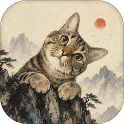
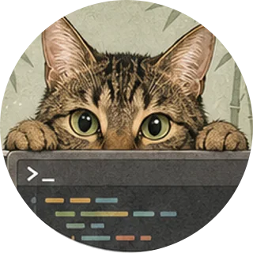
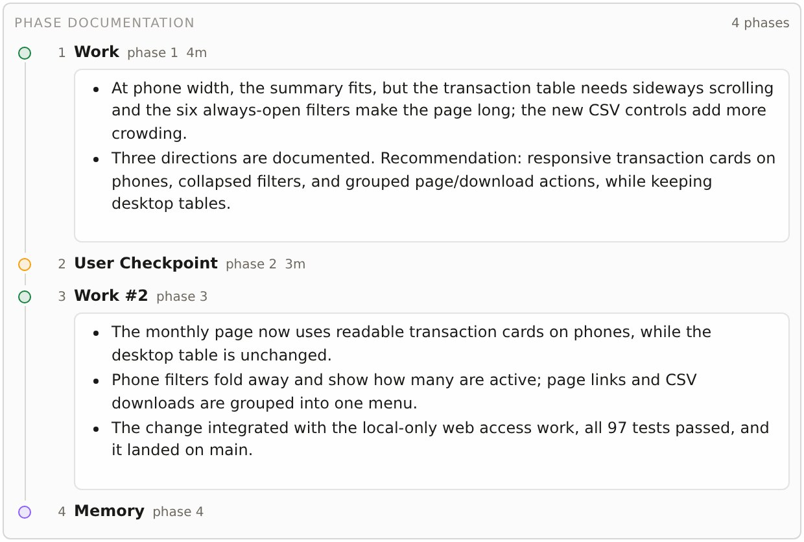
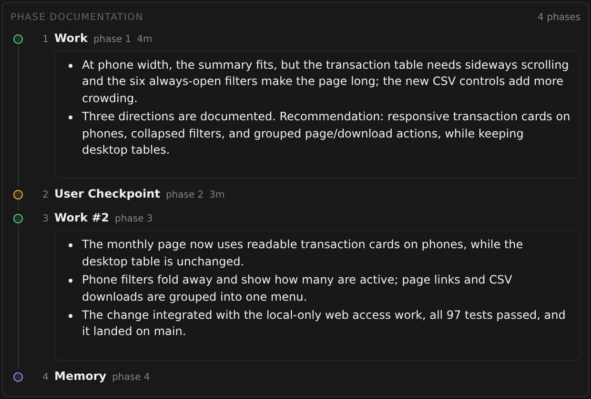
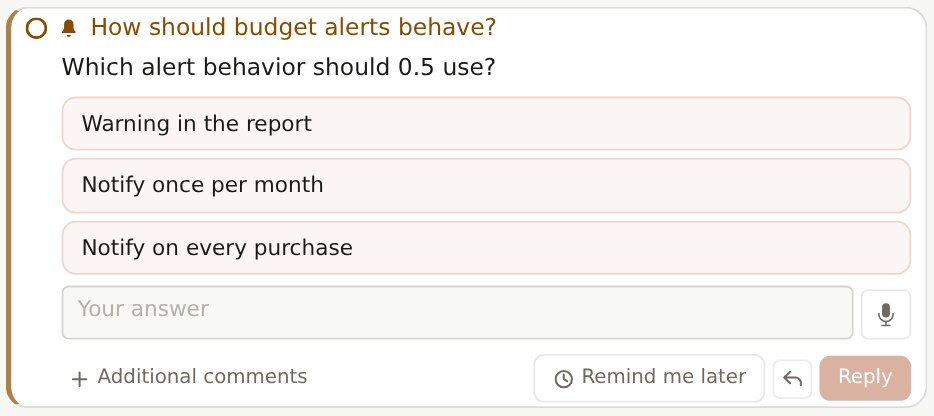
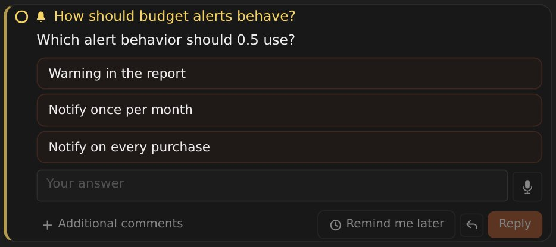
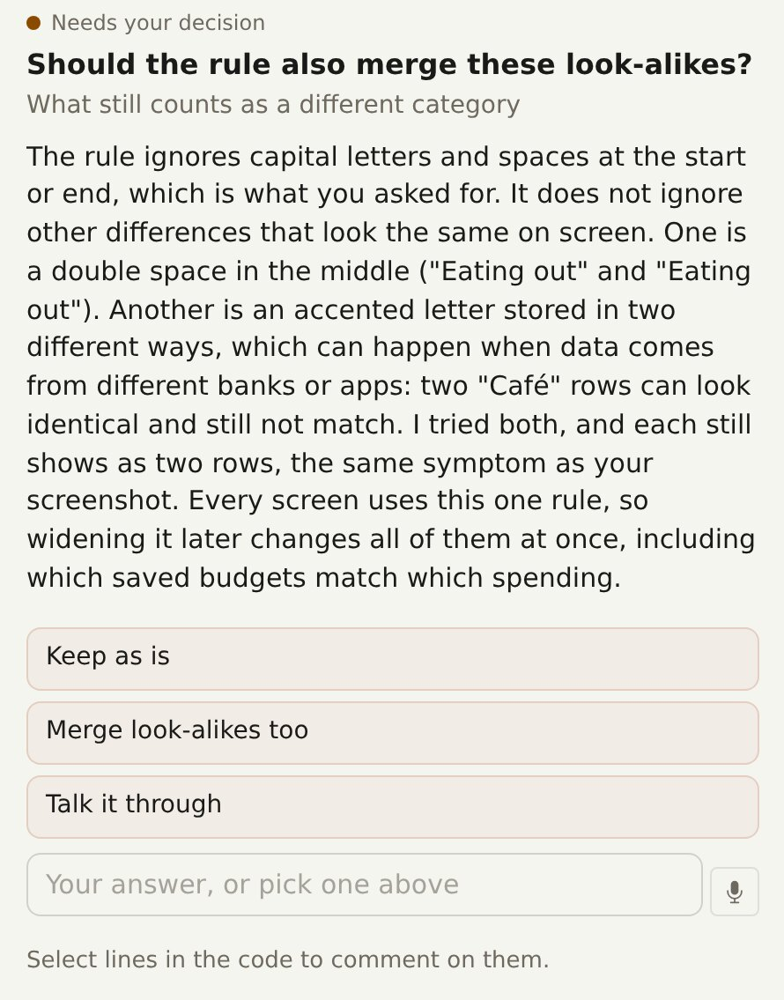
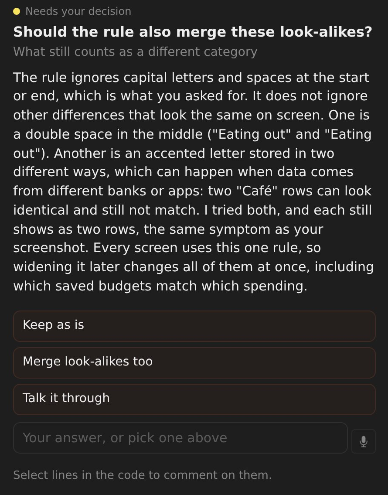
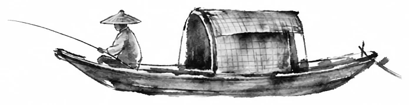
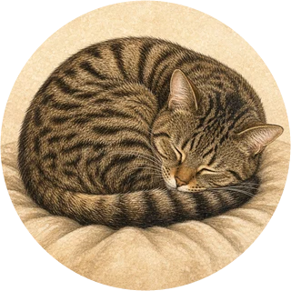

Leaders run the work
A leader files each request as a quest, picks or starts a worker, queues a batch with its dependencies and reviews what comes back.

TakodeTakode · open source · for Claude Code and Codex
Talk to a few leader sessions. They turn your requests into quests, run workers in parallel, land the changes, and come back only with decisions and results.
Parallel sessions, worktrees, diffs and your phone are table stakes, and Takode has them. This is what it adds.
A leader files each request as a quest, picks or starts a worker, queues a batch with its dependencies and reviews what comes back.
Each quest keeps what was asked, what was decided, its commits and a final summary, so "why did we do it this way?" has an answer months later.
Lessons go into Git-tracked Markdown notes that later sessions read before related work. No hidden model memory.
A landing queue tests waiting changes together, and leases make agents take turns on dev servers, browsers and build machines.
Questions arrive with context and suggested replies, in the thread they are about. One bell collects them across every leader.
Sessions run wherever the code or the GPU is, and one Takode keeps every session, quest and note.
Work Board
A leader queues the whole batch, holds each quest until a worker is free or the quests it depends on are done, and starts it. When a worker finishes, asks or stalls, its leader hears about it and moves the quest on.
Workers keep their context, so a follow-up goes to the one that already knows the code. Every worker is an ordinary session you can open and talk to.

Quests and memory
A quest follows a short Journey: Work, a User Checkpoint whenever it waits for you, and Memory, where it records what future sessions should know. Each phase leaves a summary for you and fuller notes for later agents.
Lessons that matter beyond one quest become plain Markdown notes in a Git repo you can browse, edit and diff.


Landing queue
Workers submit and move on. The queue tests waiting changes together, finds the one that broke a batch, and lands the rest.
Attention
A question comes as a short explanation and a card with suggested replies, in the thread of the quest it is about. Only that quest waits; everything else keeps moving.
One bell gathers every leader's questions and unread results. Phone alerts and read-aloud answers follow you away from the desk.


Results
Each finished quest links its exact commits, and each commit opens in a compact diff. Reports, slide decks and figures land in a Library where you can comment on any passage. Ask for a code review and you get a guided walkthrough that puts the questions needing your call first.


Machines
Each machine runs takode node and dials out with its own token. Git, diffs and terminals run where the files are, and sessions ride out network drops and restarts.
Needs Bun and an authenticated Claude Code or Codex CLI. MIT licensed.
git clone https://github.com/MrVPlusOne/takode.git cd takode && bun install --cwd web --frozen-lockfile make serve
Then open localhost:3456, start a leader and hand it something.


Named after Tako, who naps while the agents work.